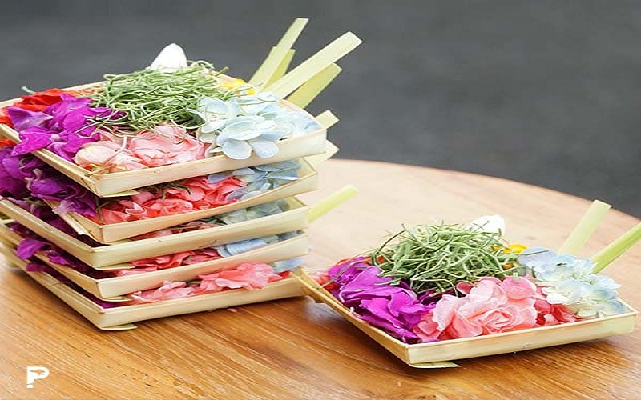

Pradnya_Canang_Sari

Previous
Next
Menerima pesanan canang sari, canang ceper, Daksina PEJATI dan segala macam kelengkapan sarana persembahyangan,...
Ket : pesanan bisa di antar ke rumah untuk di wilayah Tabanan Kota dan sekitarnya
free ongkir...